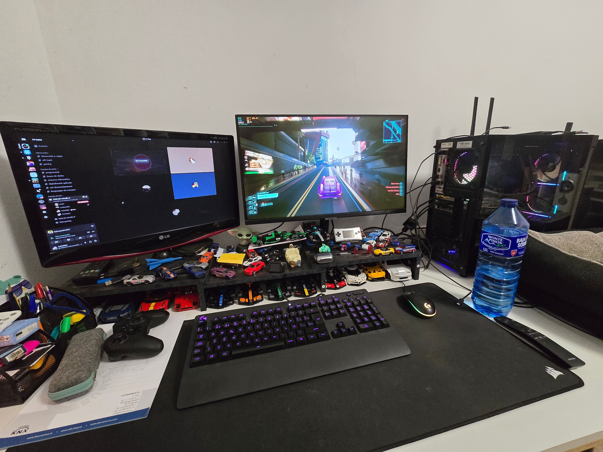
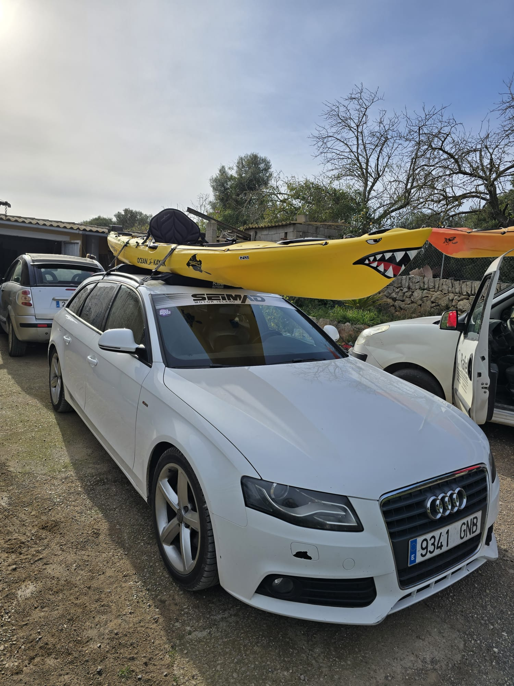

La meva galeria d'imatges
Col·lecció personal de moments especials

A aquest lloc m'hi han passat moltes coses i moltes aventures, es important principalment per la gent que ja no hi es.
Puig de Sant Salvador, Felanitx

Un dia hi vaig anar amb un amic de ruta amb els cotxes, va ser un dia espectacular, varem disfrutar molt d'anar-hi.
La Serra de Tramuntana

El primer viatge que vaig fer amb la meva parella, just feia 6 mesos que ens haviem conegut.
London Eye


- Processador Intel© Core™ i7-12700H (2.3GHz~4.7GHz)
- Memoria RAM 8x2GB DDR4 3200MHz
- Almacenamiento Gen4 1TB
- Dsiplay 15.6" Thin Bezel FHD 1920x1080 IPS-level Anti-glare Display LCD (240Hz, 72% NTSC)
- Controlador gráfico NVIDIA © GeForce RTX™ 3060 Laptop GPU 6GB GDDR6
- Carregarem la bateria al màxim.
- S'instal·larà el SO que es desitji.
- A continuació s'instal·laran els controladors i es configuararn correctament.
- Com a darrer pas, instal·larem els programes que necessiti l'usuari.
1618,86€1345,95€
El preu pot variar. Les especifiacions poden canviar.
El meu portfolio
Soc un jove al que sempre han agradat els ordinadors i cualsevol vehicle a motor
-
Play-Rig

- I5 8400:
- Es un procesador humil i de fa cert temps, pero fa la seva feina
- RTX 2060:
- Es un grafica simple que una vegada ben configurada, fa molt bona feina
-
Petit

- S-Line:
- Du el paquet interior i exterior S-Line, gracies al cual du la suspensio rebaixada i mes esportiva
- Modificacions pendents:
- Reprogramació per arribar als 200CV, cualque detall estetic, i millores d'estabilitat
- Motorització:
- 1968 cm3 de 170 CV turbo-diesel I4
-
Sa bestia

- Origen:
- Va arribar a les meves mans com a present dels "meus avis alemanys"
cuan varen haver d'abandonar la illa.
- Modificacions pendents:
- Apart de fer que funcioni mes fi que mai, millores d'estabilitat i de potencia.
- Motorització:
- 1361 cm3 de 73 CV atmosferic I4
Guia turística de Mallorca
Es una illa de l'arxipelag Balear al mar Mediterrani, la mes gran de les germanes amb una superficie de 3620km2 i una població de 262./km2
-
Serra de Tramuntana

Es la serra que prtotegeix l'illa del temporals mes forts , està situada a la part nord-occidental de l'illa,declarada patrimoni de la Humanitat per la UNESCO, te una superficie de 30745 ha i una altura màxima de 1445 m.
- Embalsament de cúber: Gratuit
- Santuari de Lluc: parquing de pagament amb descompte per residents.
-
Es Trenc

Una platja de diversos quilometres que forma part del Parc Natural Marítim Terrestre es Trenc-Salobrar de Campos
- Compta amb pàrquing de pagament, el preu envolta els 7€
- A prop de Sa Ràpita, per si es necessita alguna cosa
-
Palma

La capital de l'illa, una ciutat plena d'historia, de elements arquietectonics espectaculars i uns habitants amigables i simpatics.
- Catedral de Mallorca: 10:00 - 17:15 entre setmana amb un preu de 10€
- Castell de Bellver: Podeu consultar horaris i preus aqui
-
Parc Natural S'Albufera de Mallorca

Es un parc situat al sud ed la badia d'Alcúdia>, al nord de l'illa de Mallorca, es la zona humida mes important de les Illes i declarada >ona d'especial protecció per a les aus (ZEPA).
- Entrada gratuita
- Horaris: 09:00 - 17:00 cada dia